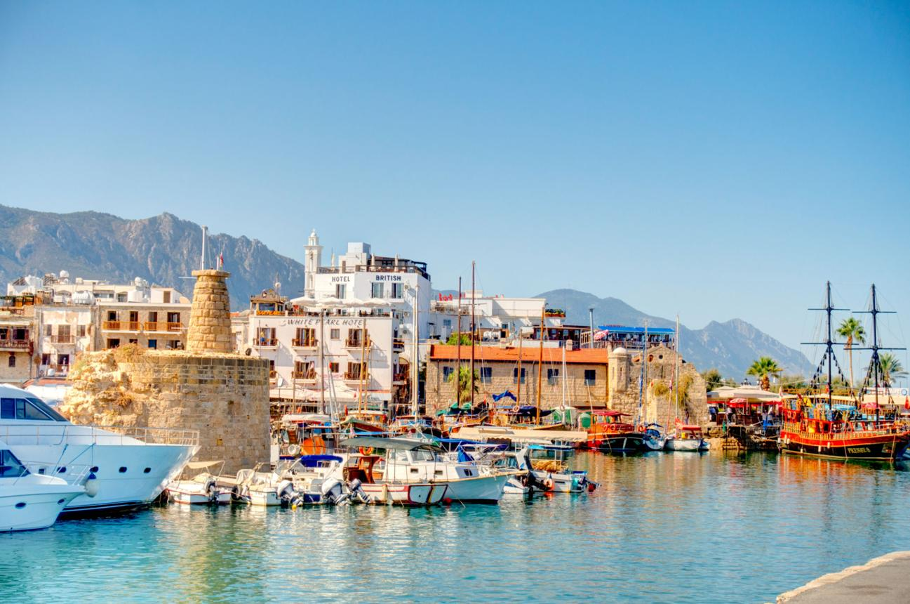

Testimony
Miracle's Experience
A four-year story of places, people, and the feeling KKTC left behind.
This page is the personal testimony section. It gives Miracle a space to explain how Northern Cyprus impressed him, what he noticed repeatedly, and why the experience felt meaningful over time.
Last four years
What kept me impressed.
The most memorable part of KKTC is the balance: quiet streets and lively markets, traditional culture and modern routines, simple hospitality and memorable flavors. That balance made the experience feel real rather than staged.
Warm hospitality
Food memories
Daily calm
Lasting impression
Favorite moments
A few places and experiences that stood out.

Sea walks
Favorite place
Sea views that reset the pace of the day.
The coastline gave the whole trip a softer tone. Even short walks near the water made the city feel lighter and more reflective.

Market energy
Use a market or shop photo.
Favorite routine
Markets where the people matter as much as the products.
Shopping felt human here. Every visit came with conversation, local suggestions, and a sense that the place was proud of what it offered.
Reflection
The memory that stayed strongest.
What impressed me most was not only what I saw, but how consistently the experience felt warm, clean, and honest. That combination made KKTC easy to remember and easy to appreciate.
"It felt like a place that did not need to try too hard to be memorable."
Miracle ChendaFour-year timeline
How the impression deepened over time.
Discovery
First visits were about noticing the streets, the food, and the local rhythm.
Familiarity
The places started to feel familiar, and the routines began to feel comfortable.
Connection
The people and places became part of the story, not just the setting.
Appreciation
The final layer was gratitude: the sense that this part of Cyprus left a real mark.